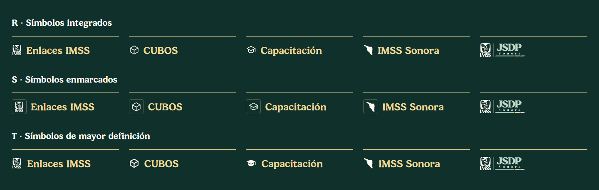
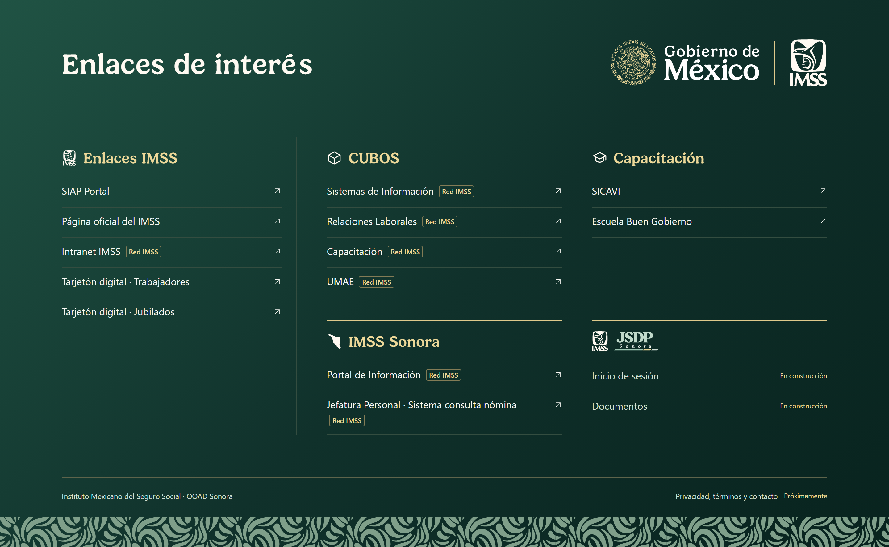
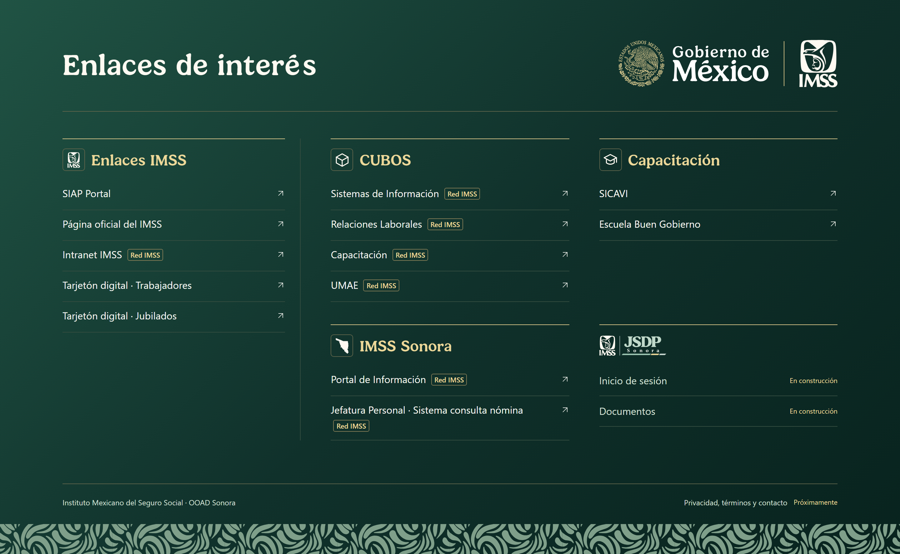
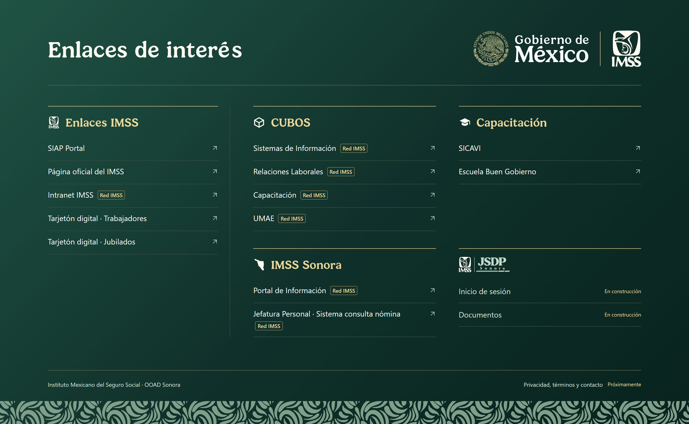

Símbolos para el footer
Tres propuestas sobre el acomodo actual: símbolos blancos junto a cada titular y el logo oficial de JSDP en una paleta clara. La silueta de Sonora parte de tu imagen de referencia.
Maquetas para elegir antes de implementar. Cada símbolo mantiene el tamaño del texto; el logo completo de JSDP ocupa la altura del renglón.
Recomendación: T, por la lectura más clara del cubo y el birrete a tamaño pequeño.
Los tres tratamientos, juntos
R: línea fina. S: marco sutil. T: trazo más firme y birrete sólido. Los tonos claros de JSDP se mantienen en las tres alternativas.

R · Símbolos integrados
Símbolos blancos sin marco, con cubo y birrete de línea fina. Mantiene la apariencia más cercana al footer actual.



S · Símbolos enmarcados
Los mismos símbolos pequeños dentro de un marco sutil; los títulos dorados y la marca JSDP permanecen libres de rellenos.



T · Símbolos de mayor definición
Cubo con aristas más firmes y birrete sólido, junto a las siluetas oficiales. Favorece la identificación al verlos pequeños.



Símbolos SVG
Vectores con fondo transparente, listos para utilizar al elegir la propuesta.
IMSS claroCubo finoCubo firmeBirrete de líneaBirrete sólidoSonoraJSDP claro